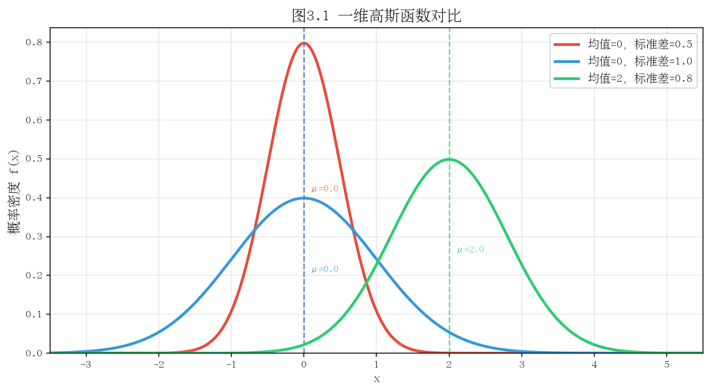
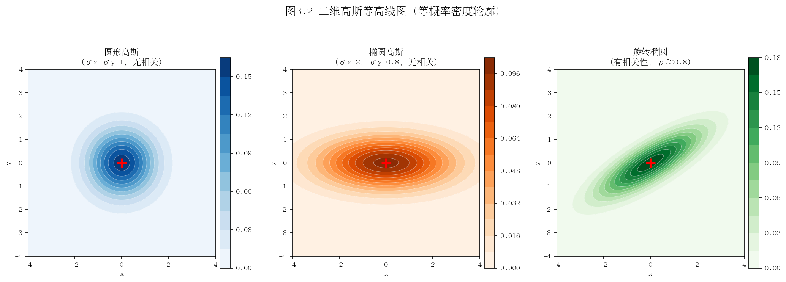

第三章：高斯函数与概率基础
本章目标：从一维高斯函数出发，逐步建立多维高斯分布的几何直觉，理解协方差矩阵的分解方式，最终认识到为何 3D Gaussian Splatting 选择高斯函数作为场景基元。
3.1 一维高斯函数
3.1.1 定义与公式
一维高斯函数（也称正态分布的概率密度函数）定义为：
其中：
\(\mu\)（均值）：分布的中心位置，控制函数峰值所在的 \(x\) 坐标
\(\sigma\)（标准差）：控制分布的"宽窄"，\(\sigma\) 越大，曲线越平坦；\(\sigma\) 越小，曲线越尖锐
\(\sigma^2\)（方差）：\(\sigma\) 的平方，是衡量数据"散布程度"的基本量
\(\frac{1}{\sigma\sqrt{2\pi}}\)：归一化系数，确保曲线下面积为 1
3.1.2 三个关键性质
性质一：面积等于 1（归一化）
这使得高斯函数可以直接作为概率密度函数使用。推导可借助极坐标换元完成：令 \(I = \int_{-\infty}^{+\infty} e^{-x^2}\,dx\)，则
故 \(I = \sqrt{\pi}\)，代入归一化系数即得面积为 1。
性质二：均值与对称性
高斯函数关于 \(x = \mu\) 严格对称，因此均值、中位数、众数三者重合，均等于 \(\mu\)。
性质三：方差
直观理解：\(\sigma^2\) 衡量随机变量偏离中心的"平均平方距离"。
3.1.3 图形直觉

几个直观要点：
改变 \(\mu\) 只是"平移"曲线，不改变形状
改变 \(\sigma\) 会同时改变"高度"和"宽度"，但面积始终保持为 1（高度与宽度的乘积守恒）
\(\sigma \to 0\) 时，高斯函数趋近于 Dirac delta 函数 \(\delta(x - \mu)\)
\(\sigma \to \infty\) 时，曲线趋于水平线，概率质量无限扩散
3.1.4 指数衰减的几何含义
注意到高斯函数的核心是 \(\exp\!\left(-\frac{(x-\mu)^2}{2\sigma^2}\right)\)。这个因子在 \(x = \mu\) 处取最大值 1，随着距中心距离 \(|x - \mu|\) 的增加，以超指数速度衰减到 0。这种"距离越远贡献越小"的性质，正是 3DGS 用高斯椭球表示局部场景区域的物理直觉基础。
3.1.5 思考题
如果将高斯函数的归一化系数去掉，即令 \(g(x) = \exp\!\left(-\frac{(x-\mu)^2}{2\sigma^2}\right)\)，则 \(\int_{-\infty}^{+\infty} g(x)\,dx\) 等于多少？请用推导过程验证。
标准正态分布 \(\mathcal{N}(0, 1)\) 在区间 \([-1, 1]\) 内的概率约为 68%。如果将 \(\sigma\) 减小为 \(0.5\)，概率质量落在 \([-0.5, 0.5]\) 内的比例是否改变？为什么？
两个高斯函数的乘积仍然是高斯函数（不一定归一化）。设 \(f_1 \sim \mathcal{N}(\mu_1, \sigma_1^2)\)，\(f_2 \sim \mathcal{N}(\mu_2, \sigma_2^2)\)，推导 \(f_1(x) \cdot f_2(x)\) 对应的均值和方差表达式。
3.2 多维高斯分布
3.2.1 从一维到多维的推广
对于 \(d\) 维随机向量 \(\mathbf{x} \in \mathbb{R}^d\)，多维高斯分布的概率密度函数为：
其中：
\(\boldsymbol{\mu} \in \mathbb{R}^d\)：均值向量（分布中心）
\(\boldsymbol{\Sigma} \in \mathbb{R}^{d \times d}\)：协方差矩阵（对称正定）
\(|\boldsymbol{\Sigma}|\)：\(\boldsymbol{\Sigma}\) 的行列式
\(\boldsymbol{\Sigma}^{-1}\)：\(\boldsymbol{\Sigma}\) 的逆矩阵
与一维情形对比：
一维 |
多维 |
|---|---|
\(\mu\) |
\(\boldsymbol{\mu}\) |
\(\sigma^2\) |
\(\boldsymbol{\Sigma}\) |
\((x-\mu)^2 / \sigma^2\) |
\((\mathbf{x}-\boldsymbol{\mu})^\top \boldsymbol{\Sigma}^{-1} (\mathbf{x}-\boldsymbol{\mu})\)（马氏距离的平方） |
\(1/(\sigma\sqrt{2\pi})\) |
\(1/((2\pi)^{d/2} |\boldsymbol{\Sigma}|^{1/2})\) |
3.2.2 协方差矩阵的结构
对于二维情形，设 \(\mathbf{x} = (x_1, x_2)^\top\)，协方差矩阵为：
其中：
\(\sigma_1^2, \sigma_2^2\)：分别是 \(x_1, x_2\) 方向的方差（对角元素）
\(\rho \in [-1, 1]\)：相关系数，描述两个维度之间的线性相关程度
\(\text{Cov}(x_1, x_2) = \rho\sigma_1\sigma_2\)：协方差（非对角元素）
\(\boldsymbol{\Sigma}\) 必须满足：
对称性：\(\boldsymbol{\Sigma} = \boldsymbol{\Sigma}^\top\)（因为 \(\text{Cov}(X_i, X_j) = \text{Cov}(X_j, X_i)\)）
正定性：对任意非零向量 \(\mathbf{v}\)，有 \(\mathbf{v}^\top \boldsymbol{\Sigma} \mathbf{v} > 0\)（保证概率密度有意义）
3.2.3 等高线是椭圆的几何推导
概率密度函数的等高线由 \(f(\mathbf{x}) = c\)（常数）确定，等价于：
其中 \(k^2 = -2\ln(c \cdot (2\pi)^{d/2} |\boldsymbol{\Sigma}|^{1/2})\) 为正常数。
这正是马氏距离（Mahalanobis Distance）为常数 \(k\) 的方程，几何上是一个以 \(\boldsymbol{\mu}\) 为中心的椭球。
特殊情形分析：
当 \(\boldsymbol{\Sigma} = \sigma^2 \mathbf{I}\)（各向同性）时，等式变为 \(\|\mathbf{x} - \boldsymbol{\mu}\|^2 = k^2 \sigma^2\)，等高线为正圆
当 \(\boldsymbol{\Sigma}\) 为对角矩阵但对角元素不同时，等高线为轴对齐的椭圆，半轴长与各方向标准差成正比
当 \(\boldsymbol{\Sigma}\) 有非零非对角元素时，等高线为旋转的椭圆，旋转角度由特征向量决定

3.2.4 特征值分解与椭球主轴
对对称正定矩阵 \(\boldsymbol{\Sigma}\) 进行特征值分解：
其中 \(\mathbf{U} = [\mathbf{u}_1, \ldots, \mathbf{u}_d]\) 为正交矩阵（列向量为单位特征向量），\(\boldsymbol{\Lambda} = \text{diag}(\lambda_1, \ldots, \lambda_d)\) 为特征值对角矩阵（\(\lambda_i > 0\)）。
椭球的几何含义：
主轴方向：特征向量 \(\mathbf{u}_i\)
主轴长度：与 \(\sqrt{\lambda_i}\)（即各方向标准差）成正比
概率密度在特征向量方向上"投影"后互相独立
3.2.5 相关性的可视化直觉
以二维情形为例，相关系数 \(\rho\) 的几何效果：
\(\rho = 0\)：椭圆主轴与坐标轴平行，\(x_1\) 和 \(x_2\) 独立
\(\rho > 0\)（正相关）：椭圆向右上—左下方向倾斜，观测到大 \(x_1\) 时 \(x_2\) 也倾向于大
\(\rho < 0\)（负相关）：椭圆向左上—右下方向倾斜
\(|\rho| \to 1\)：椭圆极度扁平，趋近于一条直线（完全线性相关）
3.2.6 思考题
若 \(\boldsymbol{\Sigma} = \begin{pmatrix}1 & 0\\ 0 & 9\end{pmatrix}\)，写出概率密度函数的等高线方程，并说明椭圆的长轴和短轴长度分别是多少（以马氏距离 \(k=1\) 为例）。
为什么协方差矩阵必须是正定的？若 \(\boldsymbol{\Sigma}\) 只是半正定（有特征值为 0），会出现什么情况？给出几何解释。
马氏距离 \(d_M(\mathbf{x}, \boldsymbol{\mu}) = \sqrt{(\mathbf{x}-\boldsymbol{\mu})^\top \boldsymbol{\Sigma}^{-1} (\mathbf{x}-\boldsymbol{\mu})}\) 与欧氏距离有何区别？在什么情况下两者相等？
3.3 协方差矩阵的分解
3.3.1 从特征值分解到 RS 分解
在 3D Gaussian Splatting 中，需要对三维高斯的协方差矩阵进行参数化，使其满足正定性约束，同时便于梯度优化。核心思路是将协方差矩阵分解为旋转和缩放的组合：
其中：
\(\mathbf{R} \in SO(3)\)：旋转矩阵（行列式为 +1 的正交矩阵），控制高斯椭球的朝向
\(\mathbf{S} = \text{diag}(s_1, s_2, s_3)\)：对角缩放矩阵，\(s_i > 0\) 控制各主轴方向的长度
为何这个分解保证正定性？
对任意非零向量 \(\mathbf{v}\)：
因为 \(\mathbf{R}^\top \mathbf{v} \neq \mathbf{0}\)（旋转矩阵可逆），而 \(\mathbf{S}\) 的对角元素严格正，故 \(\mathbf{S}\mathbf{R}^\top \mathbf{v} \neq \mathbf{0}\)。这一分解天然保证了正定性，无需额外约束。
3.3.2 几何解释：先缩放，后旋转
将 \(\boldsymbol{\Sigma} = \mathbf{R} \mathbf{S} \mathbf{S}^\top \mathbf{R}^\top\) 理解为对单位球的变换过程：
初始状态：一个以原点为中心的单位球（各向同性，\(\boldsymbol{\Sigma} = \mathbf{I}\)）
缩放：应用 \(\mathbf{S}\) 将球拉伸为轴对齐的椭球，三个主轴长度分别变为 \(s_1, s_2, s_3\)
旋转：应用 \(\mathbf{R}\) 将椭球旋转到目标朝向

3.3.3 自由度分析
一个 \(3 \times 3\) 对称正定矩阵有 6 个独立参数（对角 3 个 + 上三角 3 个）。RS 分解给出：
\(\mathbf{R} \in SO(3)\)：3 个自由度（如欧拉角 \(\phi, \theta, \psi\)）
\(\mathbf{S} = \text{diag}(s_1, s_2, s_3)\)：3 个自由度（\(s_1, s_2, s_3 > 0\)）
总计 6 个自由度，与直接参数化等价，但避免了正定约束。
3.3.4 3DGS 的实际存储方式：四元数 + 尺度向量
直接存储旋转矩阵需要 9 个数（或施加约束），而 3DGS 采用更紧凑的方式：
四元数表示旋转（4 个参数）
单位四元数 \(\mathbf{q} = (q_w, q_x, q_y, q_z)\)，\(\|\mathbf{q}\| = 1\)，可以无歧义地表示 \(SO(3)\) 中的旋转（\(\pm\mathbf{q}\) 对应同一旋转，但不影响协方差矩阵计算）。
四元数转旋转矩阵的公式：
对数尺度存储缩放（3 个参数）
实际存储 \(\log(s_i)\)（对数尺度），在优化时取 \(\exp(\cdot)\) 保证 \(s_i > 0\)。这避免了直接优化 \(s_i\) 时可能出现的负值问题，并使优化更稳定。
完整的 3DGS 高斯参数
每个 3D 高斯椭球由以下参数描述：
属性 |
参数 |
维度 |
|---|---|---|
中心位置 |
\(\boldsymbol{\mu}\) |
3 |
四元数（旋转） |
\(\mathbf{q}\) |
4 |
对数尺度 |
\(\log \mathbf{s}\) |
3 |
不透明度（logit） |
\(\text{logit}(\alpha)\) |
1 |
球谐系数（颜色） |
SH coefficients |
\(3(l+1)^2\) |
其中球谐阶数 \(l\) 通常取 3，颜色参数为 48 个。总参数量约 59 个/高斯。
3.3.5 协方差矩阵的梯度计算
在反向传播中，需要将损失 \(\mathcal{L}\) 对 \(\boldsymbol{\Sigma}\) 的梯度传播到 \(\mathbf{q}\) 和 \(\mathbf{s}\)。利用链式法则：
每一项均可解析计算，这是 3DGS 能够端到端训练的数学基础。
3.3.6 思考题
证明：若 \(\mathbf{R}\) 是旋转矩阵（\(\mathbf{R}^\top \mathbf{R} = \mathbf{I}\)，\(\det(\mathbf{R}) = 1\)），则 \(\boldsymbol{\Sigma} = \mathbf{R}\mathbf{S}\mathbf{S}^\top\mathbf{R}^\top\) 与 \(\boldsymbol{\Sigma}' = \mathbf{S}\mathbf{S}^\top\) 的特征值相同，特征向量经旋转变换对应。
为什么 3DGS 选择四元数而不是欧拉角来表示旋转？欧拉角有哪些缺点（提示：考虑万向锁和不连续性）？
若将尺度向量 \(\mathbf{s}\) 直接参数化（不取对数），在梯度下降过程中可能出现什么问题？取对数参数化如何解决这个问题？
3.4 为什么选高斯作为场景基元
3D Gaussian Splatting 将整个场景表示为数百万个 3D 高斯椭球的集合。高斯函数被选为基元，并非偶然——它在数学、计算和物理多个维度上均具有独特优势。
3.4.1 可微性：处处光滑
高斯函数 \(g(\mathbf{x}) = \exp\!\left(-\frac{1}{2}(\mathbf{x}-\boldsymbol{\mu})^\top \boldsymbol{\Sigma}^{-1} (\mathbf{x}-\boldsymbol{\mu})\right)\) 在 \(\mathbb{R}^d\) 上无穷次可微（\(C^\infty\)），且对所有参数（位置 \(\boldsymbol{\mu}\)、协方差 \(\boldsymbol{\Sigma}\)）均可微：
这使得从渲染结果到每个高斯参数的梯度可以通过链式法则精确计算，是基于梯度优化（Adam 等）的训练过程的前提条件。
对比其他基元的可微性问题：
网格（Mesh）：在顶点处可微，但不支持拓扑变化；光栅化步骤存在不可微的离散操作
体素（Voxel）：分辨率固定，边界处不连续
隐式神经网络（NeRF）：可微，但查询开销高，难以并行化到 GPU 单指令级别
3.4.2 解析投影闭合解：2D 高斯的精确推导
3DGS 的渲染流程需要将 3D 高斯投影到相机平面（2D）。对于高斯基元，这个投影存在解析闭合解，无需数值积分。
设 3D 高斯 \(\mathcal{G}_{3D}(\mathbf{X}) \sim \mathcal{N}(\boldsymbol{\mu}_{3D}, \boldsymbol{\Sigma}_{3D})\)，相机投影变换由仿射近似 \(\mathbf{x} \approx \mathbf{J} \mathbf{W} \mathbf{X}\) 给出（\(\mathbf{W}\) 为世界到相机的变换，\(\mathbf{J}\) 为投影雅可比矩阵），则投影后的 2D 高斯参数为：
这两个公式给出了精确的解析解，不依赖任何数值积分或近似采样。关键性质来自高斯分布的线性变换封闭性：
定理：若 \(\mathbf{X} \sim \mathcal{N}(\boldsymbol{\mu}, \boldsymbol{\Sigma})\)，\(\mathbf{Y} = \mathbf{A}\mathbf{X} + \mathbf{b}\)，则 \(\mathbf{Y} \sim \mathcal{N}(\mathbf{A}\boldsymbol{\mu} + \mathbf{b},\; \mathbf{A}\boldsymbol{\Sigma}\mathbf{A}^\top)\)。
推导：
对比 NeRF 需要沿每条光线采样 64 至 192 个点进行体积积分，高斯的解析投影将渲染的核心计算从 \(O(N_\text{samples})\) 降低到 \(O(1)\)，这是 3DGS 实时渲染（30+ FPS）的根本原因之一。
3.4.3 GPU 并行友好
高斯 Splatting 的渲染流程可以映射为高度并行的 GPU 操作：
流程概览：
视锥剔除（Frustum Culling）：并行判断每个高斯是否在相机视野内，时间复杂度 \(O(1)\)/高斯
深度排序（Depth Sorting）：按深度 \(z\) 排序，可用 GPU 基数排序（Radix Sort），\(O(N \log N)\)
Alpha 合成（\(\alpha\)-blending）：从前到后按序叠加，像素级并行
关键在于每个高斯的计算（投影、颜色求值、覆盖区域判断）相互独立，满足 SIMD（单指令多数据）模式，可以在 GPU 的数千个 CUDA 核上并行执行。
高斯球谐求值同样高度并行：对每个高斯独立计算在观测方向 \(\mathbf{d}\) 下的 RGB 值，无跨高斯的数据依赖。
3.4.4 物理直觉：局部支撑的连续基
从信号处理角度，高斯核是理想的局部基函数：
有效支撑近似有限：\(3\sigma\) 以外的贡献可忽略（\(< 0.3\%\)），可通过包围盒加速剔除
连续且平滑：避免了网格/点云在边界处的锐利不连续，有利于自然场景建模
旋转对称性（各向同性情形）：使得基元在渲染时对观测角度不敏感
3.4.5 思考题
NeRF 通过 MLP 对体积密度 \(\sigma(\mathbf{x})\) 和颜色 \(\mathbf{c}(\mathbf{x}, \mathbf{d})\) 建模，需要沿光线采样。定性分析：对于渲染一张 \(800 \times 800\) 分辨率的图像，NeRF 和 3DGS 分别需要进行多少次 MLP/高斯求值？（假设 NeRF 每条光线采样 128 次，3DGS 平均每个像素叠加 30 个高斯）
高斯分布在线性变换下封闭是投影解析化的核心。但透视投影是非线性的（除以深度 \(z\)）。3DGS 如何处理这个非线性？（提示：雅可比近似）
为什么"无限支撑"的高斯函数在 GPU 实现中反而是优势？解释 tile-based rasterization 如何利用高斯的快速衰减特性进行加速。
3.5 高斯混合与叠加
3.5.1 高斯混合模型（GMM）基础
**高斯混合模型（Gaussian Mixture Model, GMM）**是多个高斯分布的加权叠加：
其中：
\(K\)：混合成分数
\(\pi_k \geq 0\)，\(\sum_{k=1}^{K} \pi_k = 1\)：混合权重（各成分的"占比"）
\(\mathcal{N}(\mathbf{x};\, \boldsymbol{\mu}_k, \boldsymbol{\Sigma}_k)\)：第 \(k\) 个高斯成分的概率密度
GMM 的核心思想：复杂分布 = 多个简单分布的叠加。
3.5.2 GMM 的万能近似能力
定理（GMM 的通用近似性）：对于任意连续概率密度函数 \(p(\mathbf{x})\)，给定 \(\epsilon > 0\)，存在足够大的 \(K\) 和适当的 \(\{\pi_k, \boldsymbol{\mu}_k, \boldsymbol{\Sigma}_k\}\)，使得
这与神经网络的万能近似定理类似，给出了 GMM 可以拟合任意形状分布的理论保证。
直觉理解：
一个高斯：只能表示单峰、椭球形状的分布
两个高斯：可以表示双峰分布（如双峰山脊）
多个高斯：通过组合，可逼近任意复杂的形状
3.5.3 3DGS 即 GMM：场景密度场的高斯混合表示
在 3DGS 框架中，整个场景的不透明度密度场可以理解为一个 GMM：
其中 \(\alpha_k \in (0, 1)\) 为第 \(k\) 个高斯的不透明度（对应 GMM 的混合权重，但不严格要求归一化）。
每个高斯基元的物理对应：
高斯参数 |
场景物理含义 |
|---|---|
位置 \(\boldsymbol{\mu}_k\) |
场景中某个局部区域的中心（物体表面、体积雾等） |
协方差 \(\boldsymbol{\Sigma}_k\) |
该局部区域的形状和朝向（椭球拉伸表示平面/纤维状结构） |
不透明度 \(\alpha_k\) |
该区域的密实程度（固体表面 \(\alpha \approx 1\)，半透明物体 \(\alpha \ll 1\)） |
球谐系数 |
该区域在不同观测方向下呈现的颜色（view-dependent appearance） |
3.5.4 Alpha 合成：高斯叠加的渲染公式
给定相机光线，将沿光线从前到后排列的 \(N\) 个高斯依次合成，最终像素颜色为：
其中：
\(c_i\)：第 \(i\) 个高斯在当前视角下的颜色（由球谐系数计算得到）
\(\alpha_i\)：第 \(i\) 个高斯对该光线的不透明度贡献（= 高斯的不透明度参数 × 该点的高斯函数值）
\(\prod_{j<i}(1-\alpha_j)\)：前 \(i-1\) 个高斯留下的透射率（transmittance），表示光线"穿越"前面所有高斯后剩余的比例
这个公式是经典体渲染方程（Volume Rendering Equation）在离散高斯基元上的近似形式，也是 NeRF 渲染公式的离散化。

3.5.5 GMM 与 3DGS 的类比对比
维度 |
经典 GMM |
3DGS |
|---|---|---|
应用目标 |
密度估计、聚类 |
场景外观建模与渲染 |
参数学习 |
EM 算法 |
基于梯度的优化（Adam） |
权重 \(\pi_k\) |
归一化（\(\sum \pi_k = 1\)） |
不透明度 \(\alpha_k\)（无归一化约束） |
输出 |
概率密度 \(p(\mathbf{x})\) |
渲染图像 \(C\)（颜色） |
评估方式 |
对数似然 |
光度损失（\(L_1\) + SSIM） |
自适应性 |
固定 \(K\) |
动态 densification/pruning |
3.5.6 自适应密度控制：3DGS 的独特优势
传统 GMM 的成分数 \(K\) 在训练前固定。3DGS 在优化过程中动态调整高斯数量：
致密化（Densification）：对欠重建区域（梯度大但尺寸小）分裂高斯，增加局部细节
剪枝（Pruning）：移除不透明度过低（\(\alpha < \epsilon\)）的高斯，减少冗余
这使得高斯数量能够自适应地集中在需要细节的场景区域，通常从初始的十万量级增长到数百万量级。
3.5.7 思考题
若两个高斯的均值相同（\(\boldsymbol{\mu}_1 = \boldsymbol{\mu}_2 = \boldsymbol{\mu}\)），权重分别为 \(\pi_1, \pi_2\)（\(\pi_1 + \pi_2 = 1\)），协方差矩阵分别为 \(\boldsymbol{\Sigma}_1, \boldsymbol{\Sigma}_2\)，则混合高斯 \(p(\mathbf{x}) = \pi_1 \mathcal{N}(\boldsymbol{\mu}, \boldsymbol{\Sigma}_1) + \pi_2 \mathcal{N}(\boldsymbol{\mu}, \boldsymbol{\Sigma}_2)\) 是否仍然是高斯分布？请用 \(d=1\) 的情形验证。
Alpha 合成公式 \(C = \sum_{i} c_i \alpha_i \prod_{j<i}(1-\alpha_j)\) 中，若所有 \(\alpha_i = 1\)，最终颜色 \(C\) 等于什么？这在物理上对应什么情形？
在 3DGS 的 densification 策略中，"克隆"（clone）和"分裂"（split）两种操作适用于什么情况？它们对高斯混合的表达能力有何不同影响？
本章小结
概念 |
核心要点 |
3DGS 中的作用 |
|---|---|---|
一维高斯 |
均值控制位置，方差控制宽度，面积=1 |
基础构件，直觉理解 |
多维高斯 |
协方差矩阵决定椭球形状，等高线为椭圆/椭球 |
场景局部区域的形状建模 |
协方差分解 \(\mathbf{RSS}^\top\mathbf{R}^\top\) |
旋转+缩放分解，保证正定性；四元数+对数尺度存储 |
可微参数化，梯度优化友好 |
高斯作为基元 |
可微、解析投影、GPU 并行高效 |
实现实时可微渲染 |
高斯混合（GMM） |
多高斯叠加可近似任意分布；\(\alpha\)-blending 合成 |
场景 = GMM，渲染 = 加权叠加 |
核心认知升级：至此，3D Gaussian Splatting 的场景表示可以被理解为：用数百万个参数化的三维高斯椭球（位置 + 形状 + 颜色 + 透明度）构成的高斯混合模型，通过对 2D 渲染结果与真实照片的误差进行梯度优化，拟合出能从任意视角逼真合成新视图的场景表示。
推荐阅读
Bishop, "Pattern Recognition and Machine Learning", Chapter 2（多变量高斯分布的严格推导）
Zwicker et al., "EWA Splatting", ACM TOG 2002（高斯溅射的历史渊源）
3Blue1Brown YouTube: "But what is the Central Limit Theorem?"（高斯分布的直觉可视化）
下一章预告：第四章将介绍 3DGS 的完整渲染流程，包括视锥剔除、深度排序、Tile-based Rasterizer 的具体实现，以及 \(\alpha\)-blending 的 GPU 并行化细节。
上一章：第二章：视觉基础——相机、投影与点云 | 下一章：第四章：球谐函数与外观建模